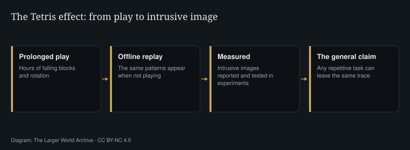

The effect
The Tetris effect is the experience of seeing a repeated task's patterns after you stop — blocks falling as you fall asleep, lines to clear on a tiled floor. The term was coined by Jeffrey Goldsmith in 1994 and studied by Robert Stickgold and colleagues from 2000, who found that a majority of intensive players reported game imagery, including during sleep onset.
Maps, diagrams and images

What the studies showed
Stickgold's experiments used novices playing Tetris for hours and asked them to record imagery at sleep onset. Most reported game images, and amnesic patients with no memory of having played also reported them — which was the interesting result. The effect does not require conscious recall of the task, which suggests it is a low-level consolidation process, not a deliberate replay.
The phenomenon generalises: the same intrusive imagery is reported after repetitive work of many kinds, and the broader category is called game transfer phenomena.
Documented: repetitive tasks produce intrusive imagery of the task, including at sleep onset.
Documented: the effect occurs in amnesic patients who cannot recall playing.
Documented: it generalises beyond games to other repetitive activity.
Not established: any harm. The effect is transient and not associated with pathology.
Why it matters: it is a clean experimental handle on memory consolidation, obtained with a video game.
Why it is in the archive
Because it is a documented, ordinary, slightly unsettling fact about minds — and because it is the honest version of a claim the fringe makes constantly: that what you look at changes what you see when you close your eyes. Here the claim is small, measured, and true.
Open resources on this topic
- BookThe Tetris effect : the game that hypnotized the world — Ackerman, Dan, author · 2016 (Internet Archive, free to read)
- PapersOpen-access articles: DOAJ · PubMed Central · Internet Archive Scholar
- BooksPublic-domain and borrowable copies: Open Library · Project Gutenberg · Google Books
More images
Cite this page
Momin, S. (2026). The Tetris Effect. The Larger World Archive. https://drsamonline.github.io/LARGE_GLOBE/tetris-effect.htmlMomin, Sohil. “The Tetris Effect.” The Larger World Archive, 2026, https://drsamonline.github.io/LARGE_GLOBE/tetris-effect.html.Momin, Sohil. “The Tetris Effect.” The Larger World Archive, 2026. https://drsamonline.github.io/LARGE_GLOBE/tetris-effect.html.@misc{the2026tetris,
author = {Momin, Sohil},
title = {The Tetris Effect},
year = {2026},
howpublished = {The Larger World Archive},
url = {https://drsamonline.github.io/LARGE_GLOBE/tetris-effect.html},
note = {Last reviewed 20 November 2026}
}Last reviewed 20 November 2026 · Corrections policy · this page is not peer reviewed
Sources for this page
- Wikipedia, “Tetris effect” — the phenomenon and the studiesen.wikipedia.org
- Wikipedia, “Memory consolidation” — the process the effect is a window onen.wikipedia.org
- Wikipedia, “Tetris” — the game that gave the effect its nameen.wikipedia.org
- Wikipedia, “Hypnagogia” — the state in which it is usually noticeden.wikipedia.org